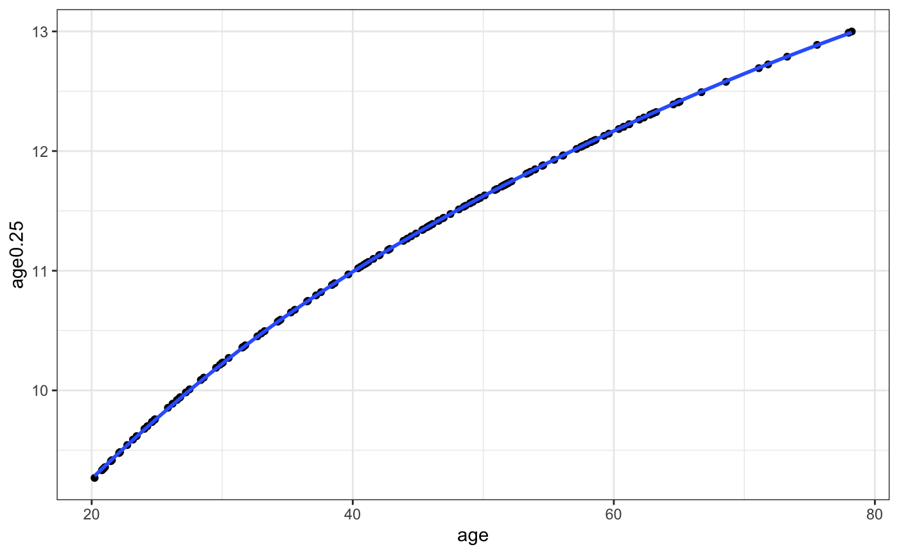

tutorial-LR.RmdData is downloaded from GEO using getGEO function in GEOquery library. Expression matrix with probeset IDs, age of the samples and covarietes to be included in the analysis are extracted from geo object. Please note that this tutorial is just to demonstrate the functionality of this package and is not a proper gene expression analysis tutorial. Thus we skip many potential QC steps and probeset -> gene ID mapping.
library(GEOquery)
#> Loading required package: Biobase
#> Loading required package: BiocGenerics
#> Loading required package: parallel
#>
#> Attaching package: 'BiocGenerics'
#> The following objects are masked from 'package:parallel':
#>
#> clusterApply, clusterApplyLB, clusterCall, clusterEvalQ,
#> clusterExport, clusterMap, parApply, parCapply, parLapply,
#> parLapplyLB, parRapply, parSapply, parSapplyLB
#> The following objects are masked from 'package:stats':
#>
#> IQR, mad, sd, var, xtabs
#> The following objects are masked from 'package:base':
#>
#> anyDuplicated, append, as.data.frame, basename, cbind,
#> colMeans, colnames, colSums, dirname, do.call, duplicated,
#> eval, evalq, Filter, Find, get, grep, grepl, intersect,
#> is.unsorted, lapply, lengths, Map, mapply, match, mget, order,
#> paste, pmax, pmax.int, pmin, pmin.int, Position, rank, rbind,
#> Reduce, rowMeans, rownames, rowSums, sapply, setdiff, sort,
#> table, tapply, union, unique, unsplit, which, which.max,
#> which.min
#> Welcome to Bioconductor
#>
#> Vignettes contain introductory material; view with
#> 'browseVignettes()'. To cite Bioconductor, see
#> 'citation("Biobase")', and for packages 'citation("pkgname")'.
#> Setting options('download.file.method.GEOquery'='auto')
#> Setting options('GEOquery.inmemory.gpl'=FALSE)
geo <- getGEO('GSE30272',destdir = '~/temp/')[[1]]
#> Found 1 file(s)
#> GSE30272_series_matrix.txt.gz
#> Using locally cached version: ~/temp//GSE30272_series_matrix.txt.gz
#> Parsed with column specification:
#> cols(
#> .default = col_double(),
#> ID_REF = col_character()
#> )
#> See spec(...) for full column specifications.
#> Using locally cached version of GPL4611 found here:
#> ~/temp//GPL4611.soft
pd <- Biobase::pData(geo)
expmat <- Biobase::exprs(geo)
ages <- setNames(as.numeric(pd$`age:ch1`), pd$geo_accession)
covs <- list(array = as.factor(setNames(pd$`array batch:ch1`, pd$geo_accession)),
bbs = as.factor(setNames(pd$`brain bank source:ch1`, pd$geo_accession)),
sex = as.factor(setNames(pd$`Sex:ch1`, pd$geo_accession)),
race = as.factor(setNames(pd$`race:ch1`, pd$geo_accession)))
ages <- ages[ages >= 20]
expmat <- expmat[, names(ages)]
covs <- lapply(covs, function(x)x[names(ages)])The resulting object is a list with several fields.
resx$input_expr[1:5,1:5]
#> GSM750020 GSM750021 GSM750022 GSM750023
#> HEEBO-028-HCC28B15 -0.19784457 -0.09546141 -0.1589613 -0.2359834
#> HEEBO-066-HCC66H21 -0.06493622 -0.37854038 -0.2417896 -0.3557261
#> HEEBO-107-HCE107I22 -1.48520950 -1.95610482 -2.1266665 -0.9711401
#> HEEBO-022-HCC22E4 0.89759515 0.14527780 0.6294776 0.3686566
#> HEEBO-047-HCC47L23 -0.52846702 -0.56551316 -0.4083924 -0.2422632
#> GSM750024
#> HEEBO-028-HCC28B15 0.005000254
#> HEEBO-066-HCC66H21 -0.223108608
#> HEEBO-107-HCE107I22 -1.478523457
#> HEEBO-022-HCC22E4 0.611548090
#> HEEBO-047-HCC47L23 -0.092808455Here we wanted the ages to be in fourth root scale.
head(resx$usedAge)
#> GSM750020 GSM750021 GSM750022 GSM750023 GSM750024 GSM750025
#> 9.268913 9.332920 9.341518 9.350705 9.358950 9.409170library(tidyverse)
#> ── Attaching packages ──────────────────
#> ✔ ggplot2 2.2.1 ✔ purrr 0.2.5
#> ✔ tibble 1.4.2 ✔ dplyr 0.7.5
#> ✔ tidyr 0.8.1 ✔ stringr 1.3.1
#> ✔ readr 1.1.1 ✔ forcats 0.3.0
#> ── Conflicts ── tidyverse_conflicts() ──
#> ✖ dplyr::combine() masks Biobase::combine(), BiocGenerics::combine()
#> ✖ dplyr::exprs() masks Biobase::exprs()
#> ✖ dplyr::filter() masks stats::filter()
#> ✖ dplyr::lag() masks stats::lag()
#> ✖ ggplot2::Position() masks BiocGenerics::Position(), base::Position()
data.frame(age = resx$input_age, age0.25 = resx$usedAge) %>%
ggplot(aes(x = age, y = age0.25)) +
geom_point() +
geom_smooth( method = 'loess') +
theme_bw()
These are the expression values for the probesets after accounting for the given covariates.
resx$LR_res$correctedExp[1:5,1:5]
#> GSM750020 GSM750021 GSM750022 GSM750023
#> HEEBO-028-HCC28B15 0.14374152 -0.08575944 0.093685091 0.069739561
#> HEEBO-066-HCC66H21 -0.09525359 -0.05652129 -0.008246693 -0.007962087
#> HEEBO-107-HCE107I22 -0.24226013 -0.28024400 -0.262323504 -0.144956126
#> HEEBO-022-HCC22E4 0.63936042 -0.14708593 0.487343901 -0.062234722
#> HEEBO-047-HCC47L23 -0.13483487 -0.31971370 -0.079435079 0.192685722
#> GSM750024
#> HEEBO-028-HCC28B15 0.40224614
#> HEEBO-066-HCC66H21 -0.01666995
#> HEEBO-107-HCE107I22 0.29373572
#> HEEBO-022-HCC22E4 -0.01630215
#> HEEBO-047-HCC47L23 0.20445321head(resx$LR_res$cov_coef)
#> (Intercept) covarray.1 covarray.10 covarray.11
#> HEEBO-028-HCC28B15 -0.34158608 0.25155700 0.02416937 -0.02761507
#> HEEBO-066-HCC66H21 0.03031737 -0.24627841 -0.28363933 -0.31598482
#> HEEBO-107-HCE107I22 -1.24294937 -0.65936021 -0.07445919 0.09313480
#> HEEBO-022-HCC22E4 0.25823473 0.03463733 0.15348972 0.21154725
#> HEEBO-047-HCC47L23 -0.39363215 0.06685272 -0.04656959 0.13628752
#> HEEBO-060-HCC60K24 0.22846849 -0.35232546 -0.26090316 0.02296620
#> covarray.12 covarray.13 covarray.14 covarray.15
#> HEEBO-028-HCC28B15 -0.009893142 -0.04446402 -0.17787945 NA
#> HEEBO-066-HCC66H21 -0.194463113 -0.27202330 -0.15429929 NA
#> HEEBO-107-HCE107I22 -1.304802487 0.19031663 0.31726625 NA
#> HEEBO-022-HCC22E4 -0.020549893 0.17316487 0.06500281 NA
#> HEEBO-047-HCC47L23 -0.209573393 -0.12229676 -0.14788766 NA
#> HEEBO-060-HCC60K24 -0.201058979 -0.22172737 0.04994266 NA
#> covarray.16 covarray.17 covarray.18 covarray.19
#> HEEBO-028-HCC28B15 -0.13598692 0.05956281 -0.35797083 -0.69302711
#> HEEBO-066-HCC66H21 -0.13069799 -0.40894653 -0.27202687 -0.14464434
#> HEEBO-107-HCE107I22 -0.75575856 -0.06351446 0.24691356 0.01561277
#> HEEBO-022-HCC22E4 0.37012383 -0.02469227 -0.02165697 -0.04725257
#> HEEBO-047-HCC47L23 0.01539051 -0.24882712 -0.58111425 -0.77455682
#> HEEBO-060-HCC60K24 -0.06902778 -0.36845799 0.18666500 0.17049381
#> covarray.2 covarray.3 covarray.4 covarray.5
#> HEEBO-028-HCC28B15 -0.08606321 0.1114391 0.09253654 0.24006454
#> HEEBO-066-HCC66H21 -0.19521082 -0.1773961 -0.01688363 -0.13278662
#> HEEBO-107-HCE107I22 -0.73084772 -0.8612123 -1.31639439 -0.01115028
#> HEEBO-022-HCC22E4 0.05332263 -0.3689648 -0.29732622 0.02943189
#> HEEBO-047-HCC47L23 -0.25200676 -0.1113367 0.07433453 0.01426133
#> HEEBO-060-HCC60K24 -0.21090752 -0.3272298 -0.26767794 -0.41981732
#> covarray.6 covarray.7 covarray.8 covarray.9
#> HEEBO-028-HCC28B15 0.17516507 0.05368101 -0.05138552 NA
#> HEEBO-066-HCC66H21 -0.16189479 -0.18467004 -0.23595876 NA
#> HEEBO-107-HCE107I22 -0.13416788 -0.48192857 -0.07132939 NA
#> HEEBO-022-HCC22E4 0.05832454 -0.05375891 0.07601450 NA
#> HEEBO-047-HCC47L23 -0.10605546 0.12153271 -0.20181382 NA
#> HEEBO-060-HCC60K24 -0.30397967 -0.27653991 -0.25606304 NA
#> covbbs.BTB covbbs.NIMH covsex.5 covsex.F
#> HEEBO-028-HCC28B15 NA NA -0.25432691 0.02889283
#> HEEBO-066-HCC66H21 NA NA -0.08786056 -0.03438891
#> HEEBO-107-HCE107I22 NA NA -0.42569984 0.01949769
#> HEEBO-022-HCC22E4 NA NA 0.26446423 0.13607623
#> HEEBO-047-HCC47L23 NA NA -0.46038766 0.01355101
#> HEEBO-060-HCC60K24 NA NA -0.23795779 -0.03625412
#> covsex.M covrace.AA covrace.AS covrace.CAUC
#> HEEBO-028-HCC28B15 NA 0.0803271194 0.11266801 -0.02249942
#> HEEBO-066-HCC66H21 NA -0.1060580429 -0.29111178 -0.08646416
#> HEEBO-107-HCE107I22 NA 0.2264487497 0.20788905 0.23981868
#> HEEBO-022-HCC22E4 NA -0.0005083162 0.19751637 0.25286371
#> HEEBO-047-HCC47L23 NA 0.0809799668 0.14263161 0.17601157
#> HEEBO-060-HCC60K24 NA 0.0434567946 -0.05927548 0.03272654
#> covrace.HISP
#> HEEBO-028-HCC28B15 NA
#> HEEBO-066-HCC66H21 NA
#> HEEBO-107-HCE107I22 NA
#> HEEBO-022-HCC22E4 NA
#> HEEBO-047-HCC47L23 NA
#> HEEBO-060-HCC60K24 NAhead(resx$LR_res$cov_p)
#> (Intercept) covarray.1 covarray.10 covarray.11
#> HEEBO-028-HCC28B15 3.355441e-02 0.072554217 0.862185899 0.846175659
#> HEEBO-066-HCC66H21 7.983558e-01 0.018839805 0.007043029 0.003404461
#> HEEBO-107-HCE107I22 2.729293e-07 0.001258756 0.710073909 0.649275730
#> HEEBO-022-HCC22E4 3.246641e-01 0.879621963 0.502612412 0.366478563
#> HEEBO-047-HCC47L23 4.651609e-03 0.576432429 0.697161121 0.266331887
#> HEEBO-060-HCC60K24 6.875964e-02 0.001534919 0.017952962 0.836744610
#> covarray.12 covarray.13 covarray.14 covarray.16
#> HEEBO-028-HCC28B15 9.521188e-01 0.75347119 0.3506630 0.3635377262
#> HEEBO-066-HCC66H21 1.149462e-01 0.01089645 0.2774890 0.2416405461
#> HEEBO-107-HCE107I22 1.894148e-07 0.35070563 0.2475435 0.0005945515
#> HEEBO-022-HCC22E4 9.394899e-01 0.45703434 0.8352912 0.1333890917
#> HEEBO-047-HCC47L23 1.405191e-01 0.31564366 0.3664693 0.9045843181
#> HEEBO-060-HCC60K24 1.208868e-01 0.04716223 0.7374873 0.5554305234
#> covarray.17 covarray.18 covarray.19 covarray.2
#> HEEBO-028-HCC28B15 0.688993443 1.526092e-02 1.856304e-03 0.587738713
#> HEEBO-066-HCC66H21 0.000325366 1.338167e-02 3.746964e-01 0.100484587
#> HEEBO-107-HCE107I22 0.766636725 2.403304e-01 9.603505e-01 0.001691538
#> HEEBO-022-HCC22E4 0.919542932 9.279721e-01 8.952220e-01 0.837941502
#> HEEBO-047-HCC47L23 0.053383516 8.402116e-06 6.429599e-05 0.066365525
#> HEEBO-060-HCC60K24 0.001921188 1.038702e-01 3.196234e-01 0.091401388
#> covarray.3 covarray.4 covarray.5 covarray.6
#> HEEBO-028-HCC28B15 4.258638e-01 5.577210e-01 0.0933922348 0.209956138
#> HEEBO-066-HCC66H21 9.030956e-02 8.857703e-01 0.2117473259 0.120510177
#> HEEBO-107-HCE107I22 3.505835e-05 4.785193e-08 0.9565449821 0.503383193
#> HEEBO-022-HCC22E4 1.099536e-01 2.525526e-01 0.8998143416 0.798853486
#> HEEBO-047-HCC47L23 3.547472e-01 5.836366e-01 0.9071402552 0.376287442
#> HEEBO-060-HCC60K24 3.298346e-03 3.177157e-02 0.0002451186 0.006043644
#> covarray.7 covarray.8 covsex.5 covsex.F covrace.AA
#> HEEBO-028-HCC28B15 0.71308364 0.74192179 0.34145616 0.5666635 0.5621335
#> HEEBO-066-HCC66H21 0.09128108 0.04404852 0.65868006 0.3604943 0.3049778
#> HEEBO-107-HCE107I22 0.02307356 0.75060653 0.26854900 0.7879453 0.2567722
#> HEEBO-022-HCC22E4 0.82263047 0.76684907 0.54670354 0.1021227 0.9982175
#> HEEBO-047-HCC47L23 0.33340599 0.13395581 0.04640125 0.7543722 0.4965614
#> HEEBO-060-HCC60K24 0.01674356 0.03769366 0.25600279 0.3589934 0.6886649
#> covrace.AS covrace.CAUC
#> HEEBO-028-HCC28B15 0.55291710 0.8747755
#> HEEBO-066-HCC66H21 0.04113391 0.4168686
#> HEEBO-107-HCE107I22 0.44669709 0.2440868
#> HEEBO-022-HCC22E4 0.52669054 0.2821433
#> HEEBO-047-HCC47L23 0.38239191 0.1530206
#> HEEBO-060-HCC60K24 0.68998505 0.7697268This is the matrix used to model age-related expression change - the reason it is different from corrected matrix is because we may further scale the expression level for the features (‘sc_features’ parameter.)
resx$usedMat[1:5,1:5]
#> GSM750020 GSM750021 GSM750022 GSM750023
#> HEEBO-028-HCC28B15 1.0091620 -0.2871123 0.5911650 0.29352207
#> HEEBO-066-HCC66H21 -0.9555347 -0.2572425 -0.1427567 0.09696569
#> HEEBO-107-HCE107I22 -1.0376738 -0.8270433 -1.0321936 -0.14971724
#> HEEBO-022-HCC22E4 3.3042969 -0.3330397 1.9308534 -0.03239003
#> HEEBO-047-HCC47L23 -1.1530169 -1.6169643 -0.6715564 0.56727248
#> GSM750024
#> HEEBO-028-HCC28B15 1.4006452
#> HEEBO-066-HCC66H21 -0.2210543
#> HEEBO-107-HCE107I22 0.6588546
#> HEEBO-022-HCC22E4 -0.0959017
#> HEEBO-047-HCC47L23 0.6736506Absolute values of this matrix can be considered as the level of heterogeneity for each gene, each sample.
resx$residMat[1:5,1:5]
#> GSM750020 GSM750021 GSM750022 GSM750023
#> HEEBO-028-HCC28B15 1.3954949 0.08632138 0.9628657 0.6633713
#> HEEBO-066-HCC66H21 -1.2084131 -0.50167761 -0.3860575 -0.1451232
#> HEEBO-107-HCE107I22 -0.6405742 -0.44320245 -0.6501340 0.2304394
#> HEEBO-022-HCC22E4 3.0327302 -0.59553912 1.6695722 -0.2923699
#> HEEBO-047-HCC47L23 -1.1400807 -1.60446002 -0.6591101 0.5796568
#> GSM750024
#> HEEBO-028-HCC28B15 1.7688328
#> HEEBO-066-HCC66H21 -0.4620556
#> HEEBO-107-HCE107I22 1.0373032
#> HEEBO-022-HCC22E4 -0.3547135
#> HEEBO-047-HCC47L23 0.6859793